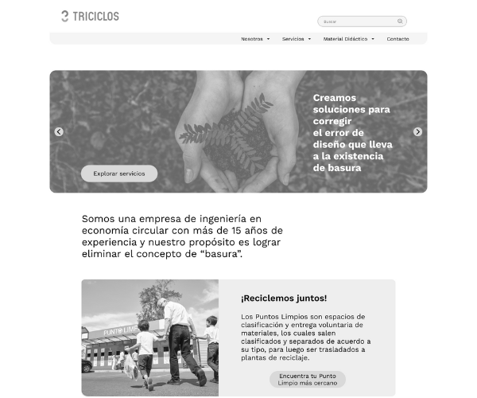

Soy una persona metódica que busca dar resultados concretos y realistas en el ámbito del diseño UX/UI. Creo firmemente que el diseño es un enfoque de perspectivas, ya que la realidad de cada usuario puede ser diferente, dependiendo de cómo la miremos.
Mi objetivo es siempre ofrecer una gama de posibilidades que permitan concretar proyectos de la manera más factible y eficiente para el usuario.
En mi trabajo, me adapto a distintos equipos de trabajo y metodologías de estudio, asegurando una colaboración fluida y productiva. Mi enfoque se centra en crear experiencias digitales que transformen ideas en soluciones prácticas y utilizables, garantizando que cada diseño no solo cumpla con los requisitos estéticos, sino que también ofrezca una experiencia intuitiva y satisfactoria.
ContactameSoy un diseñador UX/UI meticuloso que se enfoca en entregar resultados concretos y realistas. Mi enfoque se basa en entender y empatizar con las diferentes perspectivas de los usuarios para crear experiencias digitales intuitivas y efectivas. Aquí están algunas de las habilidades que poseo:
Proyectos